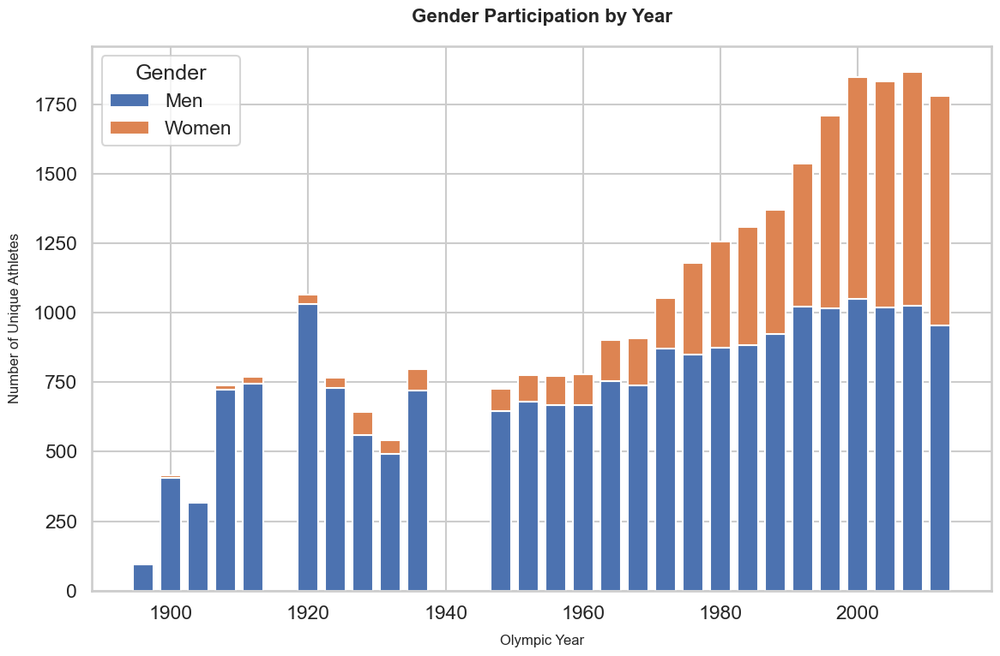
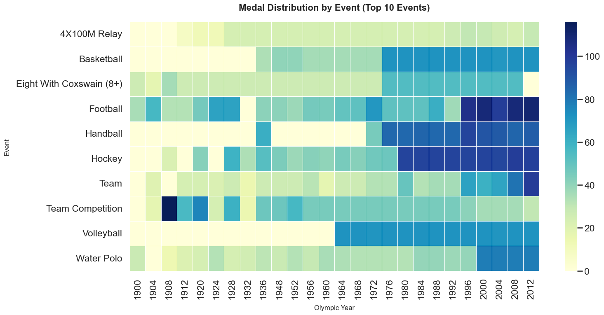

Project Goal
Analyze the history of the Summer Olympic Games using data visualization to reveal patterns in medal counts, athlete demographics, and country-level performance across time.
An interactive exploration of Summer Olympic medal history, country performance, and gender participation trends from 1896 to the present.
Analyze the history of the Summer Olympic Games using data visualization to reveal patterns in medal counts, athlete demographics, and country-level performance across time.
Our combined dataset includes 35,000+ medal-winning athlete records covering the Summer Olympic Games from 1896 to the most recent edition. We merged three primary sources: the summer.csv, athlete dataset, the dictionary.csv country metadata (including GDP per capita and population), and the ISO_Codes.csv country code lookup. After merging and cleaning, the final table has more than 10 features (including Year, City, Sport, Event, NOC/Country, Athlete Name, Medal Type, Gender, GDP per Capita, Population). This rich structure enables exploration of country performance, gender participation, sports/ events trends, and socio-economic correlates.
We integrate this file with Dictionary.csv (country metadata,
GDP per capita, population) and ISO_Codes.csv (standardized
country codes) to create a combined OLYMPICS Dataset that
connects athlete performance to country-level characteristics.
This section presents static charts created in Python (Altair/Matplotlib) to provide an overview of Olympic medal trends.
Line chart showing how medal totals for major countries evolve across different Olympic years.

This visualization shows how global dominance in the Olympics has shifted over time. The United States consistently leads total medal counts, while countries such as the Soviet Union and China emerge as strong competitors in specific eras. Major geopolitical events — including wars, boycotts, and national sports investments — strongly influence these trends.
Stacked bar chart summarizing male vs female athlete participation over Olympic history.
Gender participation in the Olympics has risen dramatically over the last century. While early Games were almost exclusively male, the number of female athletes grew sharply after the 1970s. This reflects global gender equality movements and expanded Olympic policies that increased women's access to competitive events.
Heatmap showing which sports and events produce the highest total number of medals.
The heatmap highlights how certain sports dominate Olympic medal counts. Athletics and swimming appear heavily saturated due to their many event categories, while sports with fewer events, such as weightlifting or fencing, show lighter activity. This explains why many countries invest strongly in multi-event sports to maximize their medal potential.
This section hosts interactive visualizations built with D3 and Altair (via embedded HTML). Users will be able to filter by year, country, gender, and sport to explore medal patterns.
Interactive choropleth map...
Interactive bar chart showing top 10 countries.
Dashboard with controls to see how men’s and women’s medals compare for each Olympic year.
As we complete the analysis, this section summarizes early insights from our static and interactive visualizations: shifts in global medal dominance, changes in gender representation, and how socio-economic factors may correlate with Olympic success.
Early Olympics were dominated by European nations such as France, Great Britain, and Germany. By the mid–late 20th century, the United States and the Soviet Union (URS) became the two primary global leaders in medal count. In recent decades, China has risen sharply, especially after 2000, emerging as one of the top medal-winning nations.
From the early 1900s to the present, the number of women athletes has increased more than tenfold. Our gender participation charts show a steady upward trend beginning in the 1970s, with near-parity in recent Games. This reflects broader shifts in gender equity, expanded Olympic events for women, and policy changes that increased access to competitive sport worldwide.
The event-level heatmap indicates that some sports, such as Basketball and Volleyball, have become more globally competitive over time. Traditional team events like Football, Hockey, and Water Polo show long-term continuity but with more countries earning medals in the last 40 years, suggesting a gradual diffusion of high-performance programs.